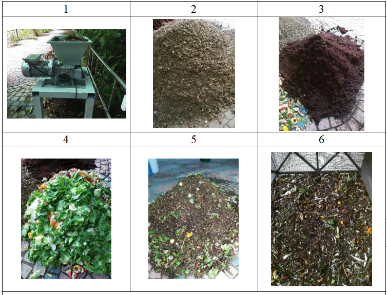

万科公益基金会
关 于 机 构
万科公益基金会是由万科企业股份有限公司发起，经国家民政部、国务院审核批准，于2008年成立，由民政部主管的全国性非公募基金会。2017年被认定为慈善组织。截至2020年底，万科公益基金会已经在社区废弃物管理、绿色环保、救灾抗疫、古建筑保护、教育发展、精准扶贫、儿童健康等诸多领域累计公益支出6.3亿元。
2018年以来，万科公益基金会在新的五年战略规划框架下，以“面向未来，敢为人先”为理念，关注对未来影响深远的议题，以“可持续社区”为目标，推动实现人与社会、人与自然之间和谐共进的关系。以人为本，发扬合作奋斗的主人翁精神，万科公益基金会以“研究-试点-赋能-倡导”为工作价值链，构建公益强生态，与全国数百家公益组织展开合作，并携手企业员工、社区业主、专业人士、社会义工和志愿者，以及供应商伙伴，致力于从政策、立法、企业、国际组织和民间力量等多个维度来共同推进公益事业的发展。
基金会当前着重围绕社区废弃物管理、绿色环保、社区发展和专项支持四大业务领域开展工作。
走 进 堆 肥 点
堆肥点名称：深圳市三星万科总部园区
堆肥类型：开放式堆肥
基本情况：公司食堂的全部生厨余以及园区内产生的园林绿化废弃物堆肥。使用Ghana堆肥箱进行堆肥，每天除堆体填料操作外，无其他操作，整个堆肥过程无翻堆。共使用4个Ghana堆肥箱，平均每个堆肥箱可处理生厨余670kg与几乎等量的园林绿化废弃物。实现了生厨余与绿化废弃物的在地处理。堆肥干物质除园林废弃物外，还包括一定量的椰糠。
堆 肥 操 作
堆肥操作基本上分三步：破碎、混合、填装。生厨余简单破碎，与使用粉碎机破碎的园林绿化废弃物（含干湿），按照干湿物质重量比1：1进行混合，同时喷洒EM菌。（堆肥材料中湿物质包括生厨余以及新鲜园林绿化废弃物，干物质包括干燥的园林绿化废弃物以及泡发后椰糠。）混合好后装入堆肥箱，堆料表面不覆盖，当日操作完成。重复上述操作至堆肥箱装满。
1）粉碎机
2）粉碎后园林废弃物
3）泡发椰砖
4）生厨余
5）材料混合
6）混合材料放入堆肥箱 
堆肥操作步骤

堆肥产品
数 据 展 示
1. 万科-G1-韦和祥
堆肥周期：2019年7月19日-到2019年10月19日，堆肥周期为89天，共获得原始记录58条，灵析上传数据24次，记录天数约占总堆肥天数的65%。
添加厨余重量：厨余：超过967.6kg；干物质：超过1335kg；厨余垃圾：干物质质量比约为0.72：1；本轮堆肥加入大量的绿化垃圾，堆肥前期绿化垃圾没有分类，作为厨余垃圾的一部分计算添加，2019年8月24日起将绿化垃圾分为干绿化垃圾和湿绿化垃圾，干绿化垃圾作为干物质，湿绿化垃圾作为厨余的一部分，按照干湿物质重量比1：1添加。
2. 万科+三星+G2
堆肥周期：2019年8月29日至2019年11月20日，本轮堆肥周期为84天，共获得原始记录60条，灵析上传数据11次，记录天数约占总堆肥天数的70%。
添加物质重量：厨余+绿化（干绿化+湿绿化）：813kg；干物质（椰渣）772 kg；厨余垃圾：干物质质量比为1.05：1。
堆肥过程变化：堆肥第7天，中层温度超过55℃。
堆 肥 实 践 总 结
1. 分层堆法导致堆体干湿不均
堆肥初期采用三明治堆肥的方法，一层厨余一层园林绿化废弃物，使用椰糠量较少，堆体湿度较大，有渗滤液。后翻出混匀，并改用混匀后再加进堆肥箱的方法后湿度好转，无渗滤液出现。
2. 不定期出现黑水虻
不定期出现黑水虻，且数量较多，可能和湿度太大且湿度不均匀有关。每日填料混合装入堆肥箱后未作表层覆盖，也可能是导致黑水虻大量繁殖的原因。黑水虻幼虫一般喜欢生长在堆体内部，只有在翻肥时，才可能看到黑水虻幼虫。而且暴露的黑水虻幼虫，会迅速钻向堆体下部（根据堆肥观察）。有研究表明，30-38°适合黑水虻幼虫生长，当超过45°时黑水虻幼虫死亡率达到50%以上，且生长缓慢。堆体表面上的幼虫无法通过堆体中部高温区进入堆体下部，所以会出现在肉眼可见的堆体表层。另外，黑水虻是一种食腐昆虫，有研究证明黑水虻成虫的寿命为3-4天，并不喜欢出现在人类活动区域。而且黑水虻幼虫对蝇蛆幼虫的出现有一定的抑制作用。
3. 堆肥箱外混合堆法可以减少堆肥过程中渗滤液的产出，并且无臭。干湿物质比例控制得当，堆肥过程中不需进行翻堆。